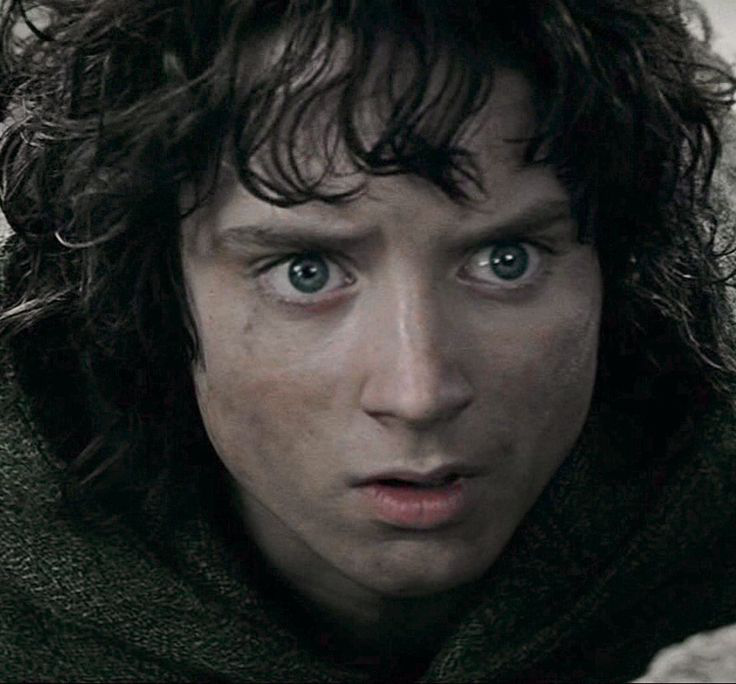

Фро́до Бэ́ггинс (англ. Frodo Baggins; варианты перевода: Торбинс, Сумникс, Беббинс) – выдающийся хоббит из Шира, единственный сын Дрого Бэггинса и Примулы Брендибак, племянник Бильбо Бэггинса.
Фродо стал хранителем Единого Кольца, которое разыскивал Тёмный Властелин Саурон, чтобы с его помощью обрести полное могущество. Фродо пронёс Кольцо из Шира в Ривенделл и вызвался нести его далее, в Мордор, чтобы уничтожить в огне Роковой горы.
Фродо Бэггинс, 3019 год Т.Э.
Внешность
Внешность Фродо описана Гэндальфом в инструкциях к трактирщику из Пригорья. В письме волшебника сказано, что Фродо — крепкий, розовощёкий хоббит, повыше и светлее (или красивее, смотреть перевод слова fair) остальных, с ямочкой на подбородке и ясными глазами.
Интересные факты